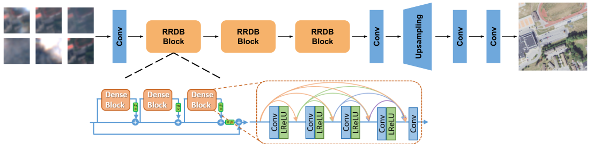

Multi-Temporal Satellite Super-Resolution with Calibrated Spatial-Temporal Uncertainty and Guided Reconstruction
High revisit frequency vs. spatial fidelity trade-off in Earth observation
Converting uncertainty from a passive diagnostic into an active correction operator
Instead of guessing high-frequency details from a single blurry snapshot, stack 8 temporal Sentinel-2 acquisitions over the same region (24 input channels). Sub-pixel shifts across passes provide complementary phase information.
Formulate a dual uncertainty field: (a) Spatial Dihedral \(D_4\) Symmetry (8 geometric transformations) + (b) Temporal Permutation Sensitivity (6 frame subsets). Produces a calibrated heatmap pinpointing true model ambiguities.
Use a continuous sigmoid weight field to dynamically blend sharp single-frame predictions with multi-temporal consensus. Eliminates artificial border seam step-discontinuities while preserving sharp boundaries.
Multi-scale feature extraction with Residual-in-Residual Dense Blocks

From geometric equivariance to continuous reconstruction operator
Balancing pixel fidelity, perceptual realism, and high-frequency textures
Measures mean absolute pixel error over the target high-resolution NAIP image \(Y\). Robust against outlier brightness shifts compared to MSE.
Computes Euclidean distance between deep feature representations extracted at layer conv3_4 of a pretrained VGG-16 network.
Forces the generator to produce outputs that are more realistic than average real images, preventing mode collapse and over-smoothed surfaces:
Analytical equations for spatial-temporal variance and dynamic soft-blending
Variance across 8 dihedral transformations \(D_4\):
Variance across 6 temporal permutations \(\mathcal{S}\):
Calibrated Hybrid Z-score Fusion:
Dynamic blending weighting field \(w(x, y) \in [0, 1]\):
Adaptive budget constraint solved by Brent's 1D root finder:
Final Guided Reconstructed Pixel Matrix:
Decoupling sensor registration jitter from algorithmic super-resolution quality
Decouples satellite orbital drift and atmospheric illumination bias via an 81-point grid search (\(\pm 8\,\text{px}\) with stride 2) and additive brightness compensation:
Evaluates luminance, contrast, and structural correlation using an \(11 \times 11\) Gaussian window (\(\sigma=1.5\)) on central \(120 \times 120\) interior pixels:
ViT-bigG-14-CLIPA-336:
Confirmed results across independent test scenes
Continuous soft-blending boosts PSNR by +0.571 dB over the single-frame baseline (\(p = 9.46 \times 10^{-14}\)) with a 96.26% scene win rate.
Mean cPSNR: 20.21 dBBoundary seam discontinuity drops by -0.00142 (\(p < 10^{-3}\)). The spatial gradient of the weighting field \(\|\nabla w\|\) drops by -20.2%, eliminating hard edge cuts.
Zero Seam DiscontinuitiesSoft-blending preserves +19.8% higher edge sharpness than uniform temporal ensembling (\(100\%\) win rate across all test scenes), resolving the blur trade-off.
100% Sharpness Win RateBridging the gap for automated computer vision in Earth observation
Key architectural takeaways and engineering roadmap